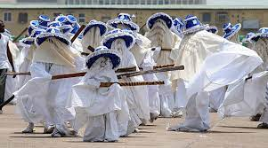
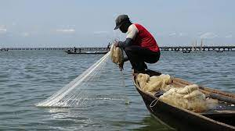
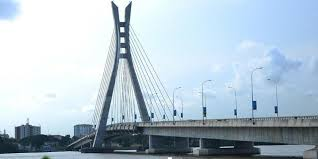
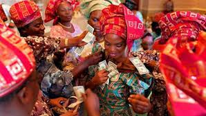

Welcome to Lagos - The Centre of Excellence
Nigeria's commercial capital city of Lagos is one of the biggest and busiest in the continent of Africa. Lagos is bordered to the north and east by the State of Ogun, to the south by the Bight of Benin, and to the west by the Republic of Benin. The city serves as the western terminus of the nation's road and rail networks, and Ikeja Airport offers domestic and international flights. The city has been dubbed the cultural, financial, and entertainment capital of Africa and has a substantial impact on business, leisure, technology, education, politics, tourism, the arts, and fashion. Lagos is also one of the 10 cities and urban areas in the world with the fastest rate of population growth. The megacity boasts the fourth-highest GDP in Africa and one of the biggest and busiest seaports on the continent. One of Sub-Saharan Africa's most important centers for education and culture is the Lagos metropolitan area.
The Eyo Festival, otherwise known as the Adamu Orisha Play, is a Yoruba festival unique to Lagos, Nigeria. In modern times, it is presented by the people of Lagos as a tourist event and due to its history, is traditionally performed on Lagos Island.
Learn more on Wikipedia

Lagos has a unique sense of humor that you wont find in any other city. The humor is incorporated into city scenes and daily life. Lagos is a great place to live in because of the transportation snarl-ups, street sellers, weekend celebrations, and many other things. One of the factors contributing to Lagosians' happiness is the city's everyday scenery.
Learn more on Wikipedia
While Lagos's beaches are mostly overrun with tourists or wash away plastics, a budget and or even a luxury tourist visit to the unsullied mangroves of Epe could be a memorable adventure. The creek of Epe is mostly shallow, shore-hugging waters at about 16ft, where mangrove forests grow. The mangroves which are typically coastal forests found growing in the sheltered estuaries along river banks and lagoons on the creek, have an estimate terrain elevation above sea level of 105 meters
Learn more on guardian.ng
The bridge is the first cable-stayed bridge to be built in Nigeria and was constructed by Julius Berger Nigeria. The bridge has a 9-metre headroom above water level in order to allow for the flow of maritime traffic.
Learn more on Wikipedia

Lagos is referred to as the "city that never sleeps" because the city comes alive in the dark. It provides several places for you to have fun at night. From clubs to cinemas to lounges, exploring Lagos at night can be very interesting.
Learn more on pulse.ng
Parties called Owambe are lavish affairs. Owambe has a successful record of bringing together individuals from many ethnic backgrounds to celebrate life via cuisine, dance, and music. Weddings, coronations, namings, installations, birthdays, and house-warmings are among the occasions that these gatherings are planned to honor. Without an Owambe party, a Lagos weekend is never complete.
Learn more on refinedng
This project was coded by Morenike Adebayo, and it is open-sourced